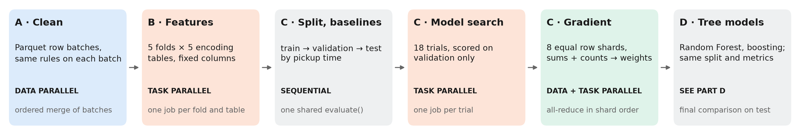
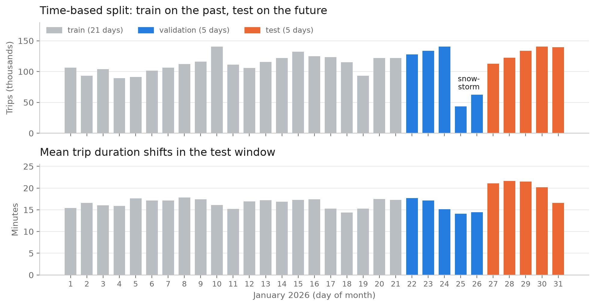
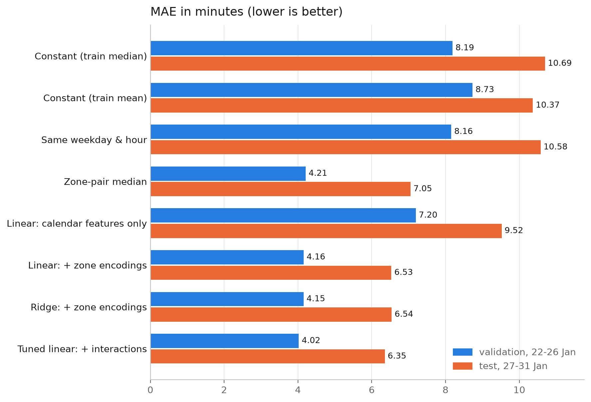
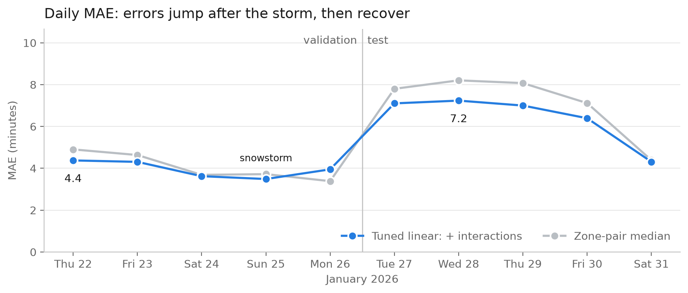
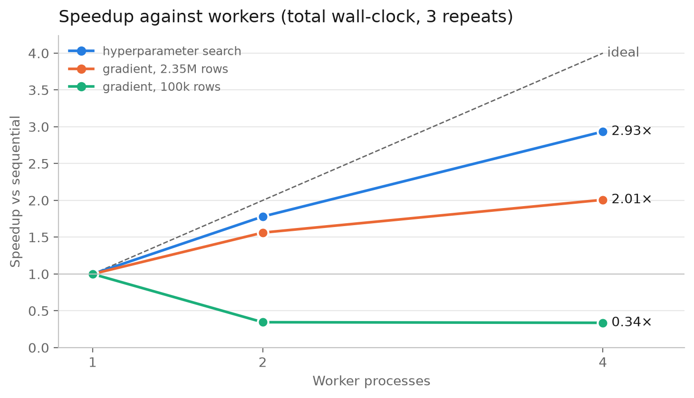
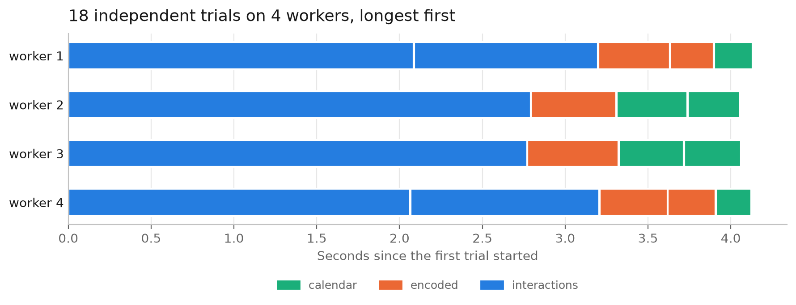

GROUP 20 · ETA PREDICTION · MEMBER C
Methodology & baselines
Local development results. Re-run on Rockhill and regenerate this page with make_c_materials.py before the poster is finalised.
Local development run on 3,504,372 cleaned trips (8 cores used). All numbers come from Group20_ETA_Final.ipynb (Part C).
4.21 minMAE of the zone-pair baseline (validation)
4.02 minMAE of the best linear model (validation)
2.9× / 2.0×search / gradient speedup, 4 workers
3 of 3sources of non-determinism observed and fixed
Where parallelism is used

Time-based split
- Train 1–21 Jan (2,348,057 trips) → validation 22–26 Jan (507,763) → test 27–31 Jan (648,552). Never random.
- Every choice uses validation; test is scored once.
- Shift: after the 25 Jan snowstorm, 27–30 Jan trips average 21.1 min; no training day exceeds 17.8.

Evaluation and results
One shared evaluate() for all models, always in minutes: MAE (main metric), RMSE, R².
| Model | Val MAE | Val RMSE | Val R² | Test MAE | Test RMSE | Test R² |
|---|
| Constant (train median) | 8.19 | 13.05 | -0.06 | 10.69 | 17.20 | -0.20 |
| Constant (train mean) | 8.73 | 12.69 | 0.00 | 10.37 | 16.08 | -0.05 |
| Same weekday & hour | 8.16 | 12.99 | -0.05 | 10.58 | 17.00 | -0.17 |
| Zone-pair median | 4.21 | 7.17 | 0.68 | 7.05 | 11.46 | 0.47 |
| Linear: calendar features only | 7.20 | 11.73 | 0.14 | 9.52 | 15.49 | 0.03 |
| Linear: + zone encodings | 4.16 | 7.40 | 0.66 | 6.53 | 11.16 | 0.49 |
| Ridge: + zone encodings | 4.15 | 7.43 | 0.66 | 6.54 | 11.20 | 0.49 |
| Tuned linear: + interactions | 4.02 | 6.98 | 0.70 | 6.35 | 10.59 | 0.54 |

Where the trip goes matters far more than when it starts.

Daily MAE: up to 7.2 min after the storm, 4.3 min on 31 Jan.- Knowing only weekday and hour barely helps (8.19 → 8.16 min); the zone pair cuts MAE to 4.21.
- Best linear model: zone encodings × time bands, 4.02 min (4.4% better than the zone pair; search chose α = 0).
- Test MAE 6.35 min, bias -4.6 min: models trained on normal traffic predict too short after the storm.
Two parallel patterns, same answer as sequential
- Hyperparameter search (task parallel): 18 independent trials, 126 configurations, chosen on validation. The longest trial takes 14× the shortest; starting the longest first cuts 4.96 s to 4.18 s.
- Gradient (all-reduce): 8 equal row shards, gradient sums and counts added in shard order, one shared weight vector. Matches the closed-form ridge within 5×10⁻⁷ min.

Speedup including process start-up.

Load imbalance between search trials.| Workload (mean of 3 runs, outputs identical) | Workers | Seconds | Speedup | Efficiency |
|---|
| Hyperparameter search (18 trials) | 1 | 12.60 ± 0.14 | 1.00× | 1.00 |
| Hyperparameter search (18 trials) | 2 | 7.08 ± 0.03 | 1.78× | 0.89 |
| Hyperparameter search (18 trials) | 4 | 4.29 ± 0.04 | 2.93× | 0.73 |
| Gradient, 2,348,057 rows | 1 | 3.53 ± 0.01 | 1.00× | 1.00 |
| Gradient, 2,348,057 rows | 2 | 2.26 ± 0.02 | 1.56× | 0.78 |
| Gradient, 2,348,057 rows | 4 | 1.76 ± 0.05 | 2.01× | 0.50 |
| Gradient, 100,000 rows | 1 | 0.12 ± 0.01 | 1.00× | 1.00 |
| Gradient, 100,000 rows | 2 | 0.34 ± 0.02 | 0.34× | 0.17 |
| Gradient, 100,000 rows | 4 | 0.35 ± 0.00 | 0.34× | 0.08 |
Amdahl's law: fitted parallel fraction p = 0.88 (search) and 0.69 (gradient). With 4 workers the gradient loses 0.19 s to process start-up, 0.12 s to messages and 0.57 s to shared memory and waiting. On 100,000 rows the parallel version is slower (0.34×): start-up and messages cost more than the maths.
Non-determinism: shown, then fixed
| Source | Distinct outputs before | Fix | After |
|---|
Shard gradients added as workers finish
weights differ by up to 7.5e-16 (addition is not associative) | 5 of 5 | add in shard order 0..7 | 1 of 5 |
Unseeded random search (ridge strength, row sample)
best alpha 59.8 / 2.24 / 136 | 3 of 3 | seed = [SEED, trial id], not per worker | 1 of 3 |
Search results collected with as_completed
row order of the results table | 4 of 5 | sort by trial id; ties broken by trial id | 1 of 3 |
Limits: we claim identical output for one machine, one set of library versions and a fixed shard count. Changing the number of shards still moves weights by up to 5×10⁻¹⁶.